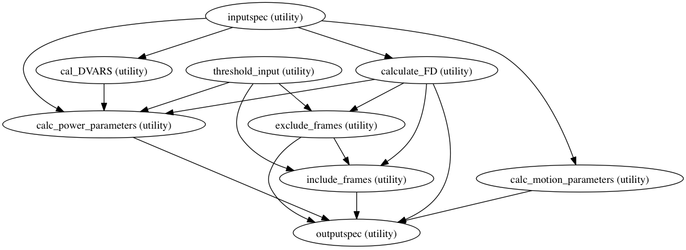

The main purpose of this workflow is to get various statistical measures from the movement/motion parameters obtained in functional preprocessing. These parameters (FD calculations) are also required to carry out scrubbing.
| Returns : | param_wf : workflow object
|
|---|
Notes
Workflow Inputs:
inputspec.rest : func/rest file or a list of func/rest nifti file
User input functional(T2) Image, in any of the 8 orientations
inputspec.subject_id : string
Subject name or id
inputspec.scan_id : string
Functional Scan id or name
inputspec.max_displacement : string (Mat file)
maximum displacement (in mm) vector for brain voxels in each volume.
This file is obtained in functional preprocessing step
inputspec.movement_parameters : string (Mat file)
1D file containing six movement/motion parameters(3 Translation, 3 Rotations)
in different columns (roll pitch yaw dS dL dP), obtained in functional preprocessing step
threshold_input.threshold : float
scrubbing threshold
Workflow Outputs:
outputspec.mean_deriv_sq_1D : string (1D file)
Mean over the masked brain region
of the derivative of the raw data
outputspec.mean_raw_sq_1D: string (1D file)
Mean over the masked brain region
for the raw data
outputspec.FD_1D : 1D file
mean Framewise Displacement (FD)
outputspec.sqrt_mean_deriv_sq_1D : 1D file
RMS values for each volume of the
derivative file of the raw data
outputspec.sqrt_mean_raw_sq_1D : 1D file
RMS values for each volume of
the raw data
outputspec.frames_ex_1D : 1D file
Number of frames that would be censored ("scrubbed")
also removing the offending time frames (i.e., those exceeding the threshold),
the preceeding frame, and the two subsequent frames
outputspec.frames_in_1D :
Number of frames left after removing for scrubbing
outputspec.power_params : txt file
Text file various power parameters for scrubbing.
outputspec.motion_params : txt file
Text file containing various movement parameters
outputspec.ftof_percent_change_1D : 1D file
The frame-wise RMS of the temporal derivative of the RAW (unprocessed)
data as a percentage of the RMS of the first of the two time points.
Order of commands:
Calculate Frame Wise Displacement FD
Differentiating head realignment parameters across frames yields a six dimensional timeseries that represents instantaneous head motion. Rotational displacements are converted from degrees to millimeters by calculating displacement on the surface of a sphere of radius 50 mm.[R5]
Calculate Frames to exclude
Remove all frames which are below the threshold
Calculate Frames to include
Include all the frames which are above the threshold
Calculate DVARS
DVARS (D temporal derivative of timecourses, VARS referring to RMS variance over voxels) indexes the rate of change of BOLD signal across the entire brain at each frame of data.To calculate DVARS, the volumetric timeseries is differentiated (by backwards differences) and RMS signal change is calculated over the whole brain.DVARS is thus a measure of how much the intensity of a brain image changes in comparison to the previous timepoint (as opposed to the global signal, which is the average value of a brain image at a timepoint).
Create a dilated brain mask:
3dAutomask -dilate 1 -prefix mask rest.nii.gzCalculate the difference in Image intensities between I and I-1 frame:
3dcalc -a rest.nii.gz[4..299] -b rest.nii.gz[3..298] -expr '(a-b)' -prefix temp_derivSquare the Intensity values of the derivative file obtained in above step:
3dcalc -a temp_deriv -expr 'a*a' -prefix temp_deriv_sqCalculate the mean intensity statistics over masked(whole brain) region for each volume of the squared derivative file:
3dROIstats -quiet -mask mask temp_deriv_sqSquare the intensity values of raw image:
3dcalc -a rest.nii.gz[3..298] -expr 'a*a' -prefix raw_sqGet the mean intensity over masked region for each volume of the squared raw file:
3dROIstats -quiet -mask mask raw_sqcalculate Square root of Mean value for derivative Image
calculate square root of Mean for the Raw Image
Calculate Power parameters:
MeanFD : Mean (across time/frames) of the absolute values for Framewise Displacement (FD),
computed as described in Power et al., Neuroimage, 2012)
rootMeanSquareFD : Root mean square (RMS; across time/frames) of the absolute values for FD
NumFD >=threshold : Number of frames (time points) where movement (FD) exceeded threshold
rmsFD : Root mean square (RMS; across time/frames) of the absolute values for FD
FDquartile(top 1/4th FD) : Mean of the top 25% highest FD values
PercentFD( > threshold) : Number of frames (time points) where movement (FD) exceeded threshold
expressed as a percentage of the total number of frames (time points)
Num5 : Number of frames (time points) where modDVARS exceeded 5%, expressed as a percentage of
the total number of frames (time points)
Num10 : Number of frames (time points) where modDVARS exceeded 10%, expressed as a percentage of
the total number of frames (time points)
MeanDVARS : The mean (across time) of a measure similar to DVARS as described by Power et al., 2012a.
The frame-wise RMS of the temporal derivative of the RAW (unprocessed) data as a percentage of the
RMS of the first of the two time points
MeanDVARS_POW : MeanDVARS as mean of frame wise RMS of the RAW data.
Calculate Motion Parameters
Following motion parameters are calculated:
Subject, Scan, Mean Relative RMS Displacement, Max Relative RSM Displacement,
Movements >threshold, Mean Relative Mean Rotation, Mean Relative Maxdisp,
Max Relative Maxdisp, Max Abs Maxdisp, Max Relative Roll,Max Relative Pitch,
Max Relative Yaw, Max Relative dS-I, Max Relative dL-R,Max Relative dP-A,
Mean Relative Roll, Mean Relative Pitch,Mean Relative Yaw, Mean Relative dS-I,
Mean Relative dL-R, Mean Relative dP-A, Max Abs Roll, Max Abs Pitch, Max Abs Yaw,
Max Abs dS-I, Max Abs dL-R, Max Abs dP-A
High Level Workflow Graph:
Detailed Workflow Graph:
References
| [R13] | Power, J. D., Barnes, K. A., Snyder, A. Z., Schlaggar, B. L., & Petersen, S. E. (2012). Spurious but systematic correlations in functional connectivity MRI networks arise from subject motion. NeuroImage, 59(3), 2142-2154. doi:10.1016/j.neuroimage.2011.10.018 |
| [R14] | Power, J. D., Barnes, K. A., Snyder, A. Z., Schlaggar, B. L., & Petersen, S. E. (2012). Steps toward optimizing motion artifact removal in functional connectivity MRI; a reply to Carp. NeuroImage. doi:10.1016/j.neuroimage.2012.03.017 |
Examples
>>> import generate_motion_parameters
>>> wf = generate_motion_parameters.motion_power_parameters()
>>> wf.inputs.inputspec.movement_parameters = 'CPAC_outupts/sym_link/sub01/rest_1/func/rest_mc.1D'
>>> wf.inputs.inputspec.max_displacement = 'CPAC_outputs/sym_link/sub01/rest_1/func/max_disp.1D'
>>> wf.inputs.inputspec.subject_id = 'sub01'
>>> wf.inputs.inputspec.scan_id = 'rest_1'
>>> wf.inputs.threshold_input.threshold = 0.5
>>> wf.base_dir = './working_dir'
>>> wf.run()
Get the last volume of the image
| Parameters : | nvols : int
|
|---|---|
| Returns : | last_volume : int
|
Get the second to last volume of the image
| Parameters : | nvols : int
|
|---|---|
| Returns : | last_vol_minus_one : int
|
Method to calculate Framewise Displacement (FD) calculations
| Parameters : | in_file : string
|
|---|---|
| Returns : | out_file : string
|
Method to calculate Number of frames that would be censored (“scrubbed”) by removing the offending time frames (i.e., those exceeding FD threshold), the preceeding frame, and the two subsequent frames
| Parameters : | in_file : string
threshold : float
|
|---|---|
| Returns : | out_file : string
|
Method to Calculate the frames that are left after censoring for scrubbing.
| Parameters : | in_file : string
threshold : float
exclude_list : string
|
|---|---|
| Returns : | out_file : string
|
Method to calculate mean of rms of temporal derivative of raw data
| Parameters : | in_file : string
|
|---|---|
| Returns : | out_file : string
|
Method to calculate mean of rms of raw data
| Parameters : | in_file : string
|
|---|---|
| Returns : | out_file : string
|
Method to calculate percentage change in the RMS value of the timepoints
| Parameters : | infile_a : string
infile_b : string
|
|---|---|
| Returns : | out_file : string
|
Method to calculate all the movement parameters
| Parameters : | subject_id : string
scan_id : string
rest : string
max_displacement : string
movement_parameters : string
|
|---|---|
| Returns : | out_file : string
|
Method to generate Power parameters for scrubbing
| Parameters : | subject_id : string
scan_id : string
rest : string
FD_ID: string :
threshold : float
ftof_percent : string
sqrt_mean_raw : string
|
|---|---|
| Returns : | out_file : string (csv file)
|
Method to get number of volumes in the image
| Parameters : | in_files: string, list :
|
|---|---|
| Returns : | out : list
|